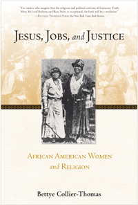

Now in paperback, an extraordinary history of African American women, and their struggle for gender and racial equality in the church and society
Now in paperback, an extraordinary history of African American women, and their struggle for gender and racial equality in the church and society


 Now in paperback, an extraordinary history of African American women, and their struggle for gender and racial equality in the church and society
Now in paperback, an extraordinary history of African American women, and their struggle for gender and racial equality in the church and society

|  |
Jesus, Jobs, and JusticeAfrican American Women and ReligionBettye Collier-Thomaspaper EAN: 978-1-43991-105-1 (ISBN: 1-4399-1105-3) |
"Historians have long awaited this account of the intertwining church, missionary, and civil rights groups whose history comprises the organizational life of African American women, and they will be inspired, enlightened.... It is hard to think of a study that undertakes such a comprehensive account of women's organizations and their meaning for any other religious group. Scholars will long be pondering what they learn about the impact of African American women's religiosity on our national history from Jesus, Jobs, and Justice."
— American Historical Review
Bettye Collier-Thomas�s groundbreaking book, Jesus, Jobs, and Justice�now available for the first time in paperback�provides a remarkable account of the religious faith, social and political activism, and extraordinary resilience of black women during the centuries of American growth and change. As co-creators of churches, women were a central factor in their development and as Collier-Thomas skillfully shows black church women created national organizations such as the National Association of Colored Women, the National League of Colored Republican Women, and the National Council of Negro Women to fight for civil rights and combat discrimination.
While religion has been a guiding force in the lives of most African Americans, for black women it has been essential. Jesus, Jobs, and Justice restores black women to their rightful place in American and black history and demonstrates their faith in themselves, their race, and their God.
Excerpt available at www.temple.edu/tempress
"In sweep and style, Jesus, Jobs, and Justice is redolent of the historiography of the grand narrative. . . . It is the first to comprehensively research and analyze the interplay among gender, race, and religion in the lives of African American women from the period of enslavement to the present. . . . It is an invaluable resource for both scholars and general readers."
—M. Shawn Copeland, Women�s Review of Books
"[Jesus, Jobs, and Justice] celebrates the black women in the religious, social, political and cultural institutions that have shaped American life, from the NAACP and the Women�s Political Council . . . to the National Council of Negro Women and the YWCA. It examines the importance of black women in missionary societies and religious communities, and gives thorough histories of the roles of black women in the . . . churches."
—Kim Mclarin, Washington Post
"Jesus, Jobs, and Justice is the most important historical study of African Americans published in the last four decades. . . . [I]n its potential impact on how we conceptualize the African American experience, it is a worthy successor to such works as W. E. B. Du Bois�s Black Reconstruction in America, C. L. R. James�s The Black Jacobins, and Harold Cruse�s The Crisis of the Negro Intellectual."
—John H. Bracey, Journal of African American History
�This is a seminal work that will stand for years to come. With Jesus, Jobs, and Justice, Collier-Thomas brings to life black women�s religious thought and proves that it was central to their politics for two centuries.�
—Glenda Elizabeth Gilmore, Peter V. and C. Vann Woodward Professor of History, Yale University
"Finally, we have a comprehensive portrait of black women and religion in America. After devoting the better part of the past two decades rummaging through church archives, denominational newspapers, and state and local repositories, Bettye Collier-Thomas offers a rich history of the struggles of African American women to secure the promise of freedom and equality in their country as well as their houses of worship.... Collier- Thomas offers an indispensable book to scholars of African American history and religion."
—Journal of American History
"Collier-Thomas admirably interprets African American women and religion in a broadly inclusive, ecumenical manner.... The wealth of information, perceptive insights, and nuanced arguments the author has incorporated in this ambitious work amply attest that she put her time and effort to commendable use."
—Journal of Southern History
Bettye Collier-Thomas is Professor of History at Temple University. She is the author of Daughters of Thunder: Black Women Preachers and Their Sermons, 1850�1979 and co-editor of Sisters in the Struggle: African American Women in the Civil Rights�Black Power Movement.
African American Studies
Women's Studies
Religion
© 2015 Temple University. All Rights Reserved. This page: http://www.temple.edu/tempress/titles/2311_reg.html.